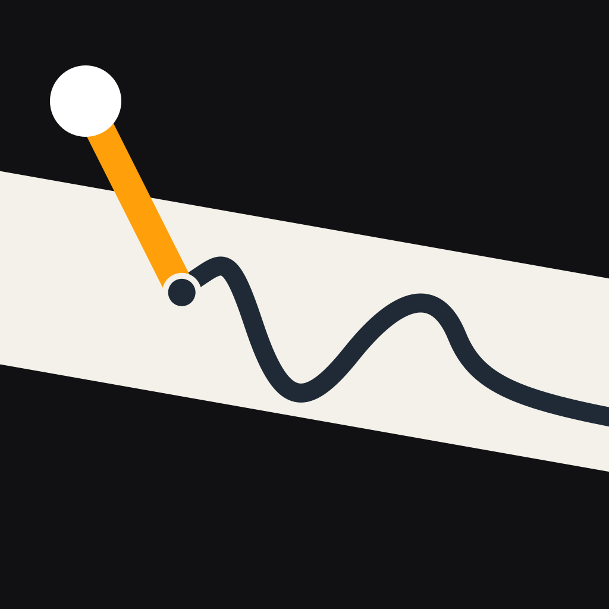

プライバシーポリシー
BikeDash
BikeDash の開発者（以下「開発者」）は、iPhone 向けアプリ「BikeDash」（以下「本アプリ」）における利用者の情報の扱いを、次のとおり定めます。
1. 基本方針
本アプリは、走行の記録をすべて利用者の iPhone の中だけに保存します。開発者が利用者の情報を受け取ったり、サーバーに保存したりすることはありません。アカウント登録、広告、利用状況の解析（アナリティクス）の仕組みもありません。
2. 本アプリが使う情報
| 情報 | 使う目的 | 保存先 |
|---|---|---|
| 位置情報（GPS） | 速度・走行距離・標高・方角・現在地の表示、天気の取得、走行ルートの記録 | 記録した走行のみ端末内 |
| モーションセンサー（加速度・ジャイロ） | バンク角・G・ピッチの表示と記録 | 記録した走行のみ端末内 |
| 気圧計 | 気圧の表示と記録 | 記録した走行のみ端末内 |
| 電子コンパス | 停車中の方角の表示 | 保存しない |
位置情報とモーションセンサーは、iOS の許可画面で利用者が許可した場合にのみ使います。許可は iPhone の「設定」からいつでも取り消せます。取り消すと、速度・バンク角などの表示や記録ができなくなります。
3. 画面ロック中の位置情報
「記録開始」を押してから「停止」を押すまでの間に限り、画面をロックしたり他のアプリに切り替えたりしても位置情報を受け取り続けます。この間、iPhone の画面上部に位置情報の利用中を示す表示が出ます。記録していないときは、本アプリを開いている間だけ位置情報を使います。
4. 端末内に保存する情報
走行を記録すると、次の情報を端末内に保存します。
- 走行ごとの集計：開始・終了時刻、走行距離、走行時間、最高速度、最大バンク角（左右）、最大の加速・減速 G
- 走行ルート：約1秒ごとの位置、時刻、速度、標高、方角、バンク角、前後・左右・上下の G、ピッチ、気圧、気温・体感温度・風速（その時点の天気予報の値）
これらは本アプリの中でのみ使い、開発者や第三者には送りません。走行ログの一覧で左にスワイプすると、記録を個別に削除できます。本アプリを削除すると、すべての記録が端末から消えます。なお、iPhone のバックアップ（iCloud またはパソコン）を有効にしている場合、記録はバックアップに含まれることがあります。
走行ログの画面から、記録を画像・GPX・CSV・バックアップファイルとして書き出せます。書き出しは利用者が操作したときだけ行い、送り先（SNS、メール、ファイルなど）は利用者が iOS の共有画面で選びます。書き出したファイルには走行ルートの位置情報が含まれるため、共有する相手にご注意ください。共有用の画像は、初期設定でルートの最初と最後の 500 m を地図から除きます。
5. 外部サービスへの送信
本アプリは、次の2つの外部サービスと通信します。どちらにも、走行の記録は送りません。
- 天気（Open-Meteo）：天気・気温・降水確率を取得するため、現在地の緯度・経度を Open-Meteo に送ります。送る座標は小数点以下2桁（約 1 km の精度）に丸め、正確な位置は送りません。取得は10分ごと、または 5 km 移動したときです。
- 地図（Apple のマップ）：地図ページと走行ログの地図の表示に、Apple の MapKit を使います。地図の表示に伴う情報の扱いは Apple のプライバシーポリシー に従います。
通信の際、各サービスには通常のインターネット通信と同じく IP アドレスなどが届きます。各サービスでの扱いは、それぞれの規約・ポリシーをご確認ください。
6. 第三者への提供
開発者は利用者の情報を受け取らないため、第三者に提供することもありません。
7. お子様の利用
本アプリはバイクを運転する方を対象としており、お子様に向けたものではありません。
8. このポリシーの変更
内容を変更する場合は、このページで新しい内容と施行日をお知らせします。情報の扱いを大きく変える場合は、アプリのアップデート時にもお知らせします。
9. お問い合わせ
本ポリシーに関するお問い合わせは、kazuma09201101@icloud.comまでご連絡ください。